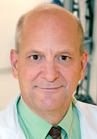
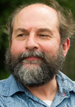
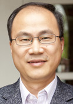
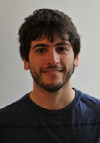
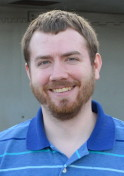

People
Faculty
David W. Roberts, MD
 | Telephone: (603) 650-8736 | Fax: (603) 650-4547
| Telephone: (603) 650-8736 | Fax: (603) 650-4547
Dr. David W. Roberts is Chief of the Section of Neurosurgery at Dartmouth-Hitchcock Medical Center and Professor of Surgery at Dartmouth Medical School. Dr. Roberts
received his MD from Dartmouth Medical School in 1975, followed by an internship at the University of Utah School of Medicine in 1976, and his Neurosurgery residency at Dartmouth-Hitchcock Medical Center in 1982. Dr. Roberts has collaborated with Thayer School of Engineering for over two decades, and is the Principal Investigator of the NIH funded, R01 Fluorescence Guided Resection Project .
Keith D. Paulsen, PhD
 | Telephone: (603) 646-2695 | Fax: (603) 646-3699
Dr. Keith D. Paulsen is the Robert A. Pritzker Professor of Biomedical Engineering at Thayer School of Engineering and Professor of Radiology at Dartmouth Medical. He is also the Director of the Dartmouth Advanced Imaging Center, Co-diretor of the Cancer Imaging and Radiobiology Research Program at the Norris Cotton Cancer Center, and Deputy Director of the Dartmouth Center of Cancer Nanotechnology Excellence. Dr. Paulsen received his MS and PhD in Engineering Sciences from Dartmouth College in 1984 and 1986, respectively. Dr. Paulsen has collaborated with Dr. Roberts for over one decade, and is currently Co-Principal Investigator of the Fluorescence Guided Resection Project and Principal Investigator of the NIH funded Brain Deformation Project.
Brent T. Harris, MD/PhD
 | Telephone: (202) 687-5345 | Fax: (202) 687-7378
| Telephone: (202) 687-5345 | Fax: (202) 687-7378
Dr. Brent T. Harris is the Directory of Neuropathology at Georgetown University Medical Center and Associate Professor of Pathology and Neurology at Georgetown University, and Adjunct Professor of Neurology at Dartmouth Medical School. Dr. Harris
received a MS in Biochemistry from Hahnemann University in 1988, his MD and PhD from Georgetown University in 1985, followed by an Anatomic Pathology residency at Stanford University in 1999, and a fellowship in Neuropathology in 1999. Dr. Harris has research and clinical interestes in neurological diseases, and is Co-Principal Investigator on the Fluorescence Guided Resection project.
Alex Hartov, PhD
 | Telephone: (603) 646-3926 | Fax: (603) 646-3699
Dr. Alex Hartov is a Professor of Engineering at Thayer School of Engineering. Dr. Hartov received his MS and PhD in Engineering Sciences from Dartmouth College in 1988 and 1991, respectively. Dr. Hartov has collaborated with Dr. Roberts and Dr. Paulsen for over one decade as part of the Brain Research Group, and is lead investigator on an Electric Impedance Tomography Project for prostate.
Songbai Ji, DSc
 | Telephone: (603) 646-9193 | Fax: (603) 646-3699
Dr. Songbai Ji is an Assistant Professor of Engineering at Thayer School of Engineering. Dr. Ji received his MS in Mechanical Engineering in 2001, and MS in Computer Science and DSc in Mechanical Engineering in 2003, all from Washington University in St. Louis. Dr. Ji has substantial expertise and extensive experience in studying brain biomechanics in both quasi-static (e.g., in image-guided neurosurgery) and dynamic impact (e.g., in traumatic brain injury) conditions using subject-specific biomechanical models and advanced imaging techniques. Within the Brain Research Group, he is heavily involved in all aspects of the brain deformation project, including designing and implementing an advanced data acquisition system for intraoperative ultrasound and stereovision, imaging analysis, and biomechanical modeling to compensate for brain deformation. In addition, he leads an effort to study brain mechanical responses subjected to impact with subject-specific brain models, which, in collaboration with other researchers, aims at better understanding the mechanisms of sports-related mild traumatic brain injury.
Postdoctoral Researchers
Xiaoyao Fan
Xiaoyao Fan is currently a Postdoctoral researcher at Thayer. She received her BE in Electrical Engineering in 2007 from Tsinghua University in Beijing, China, and her PhD in Biomedical Engineering from Dartmouth College. Her thesis and continuing work involve developing algorithms and tools for simulating brain deformation in image-guided neurosurgery.
Dennis Wirth
Research Associates
Jaime Bravo
Jaime Bravo received his BS degree in biomedical engineering from The Ohio State University, Columbus, OH, in 2013. Currently, he is working toward his PhD from Thayer School of Engineering at Dartmouth College, Hanover, NH. His research interests include light transport in tissue and spectral analysis algorithms for in vivo determination of tissue biomarkers.
Jonathan Olson
Jonathan Olson is a staff engineer hired in 2014 to assist with the group research projects. Jonathan received a BS in Aerospace Engineering from the Univeristy of Minnesota in 2008, followed by industrial test engineering for Aero Systems Engineering in Minnesota.